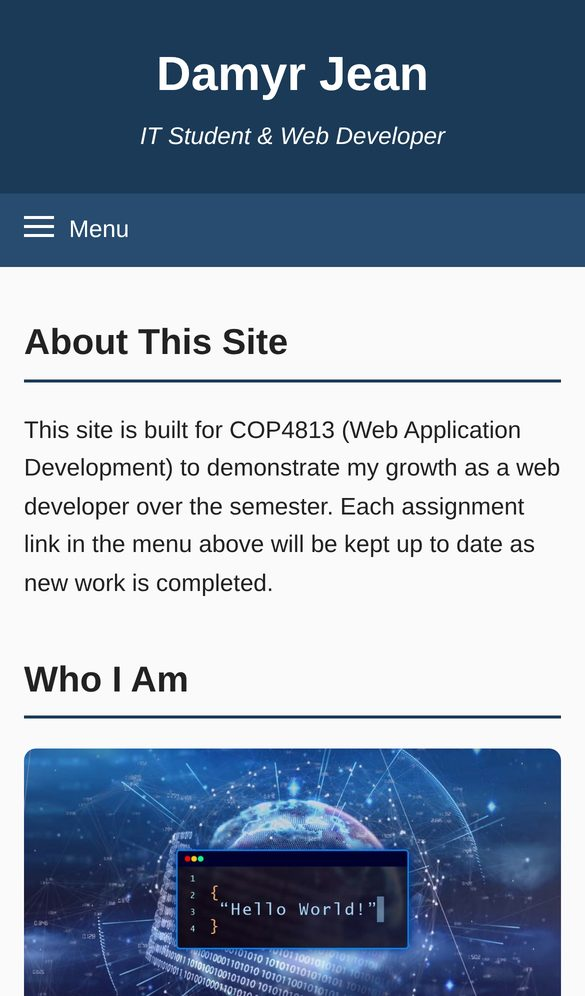
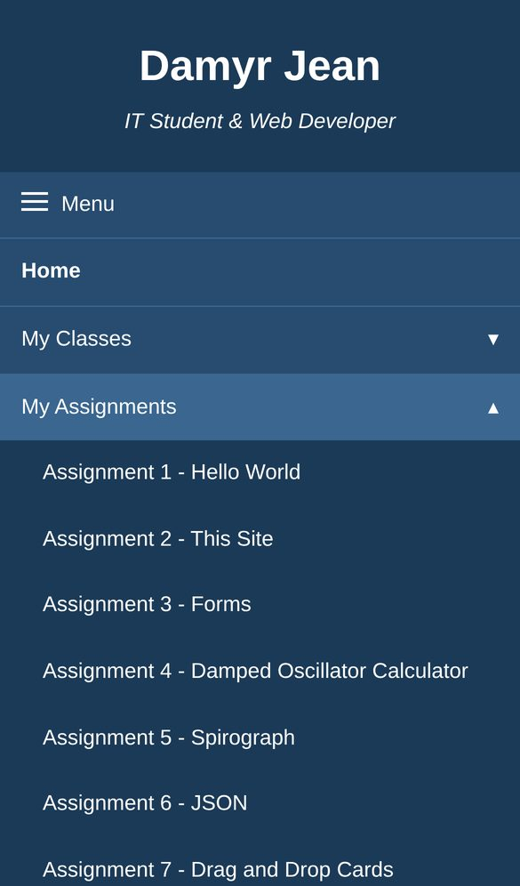
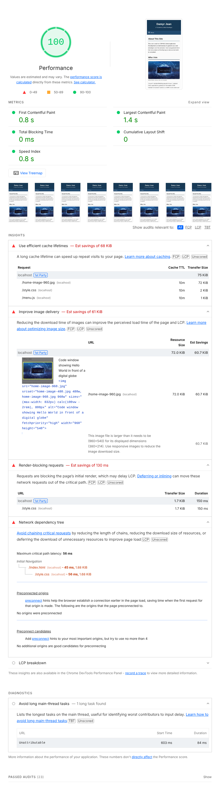
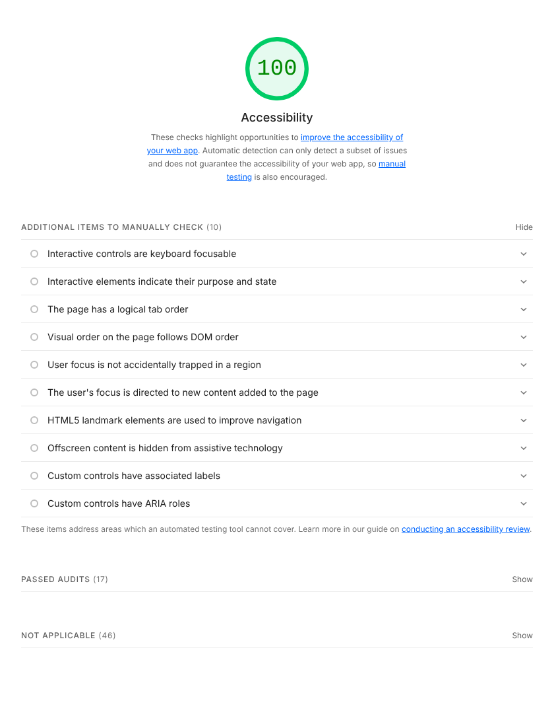
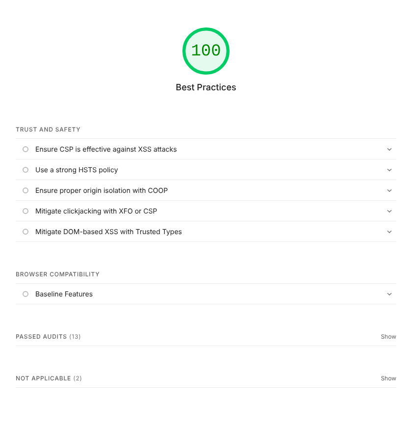
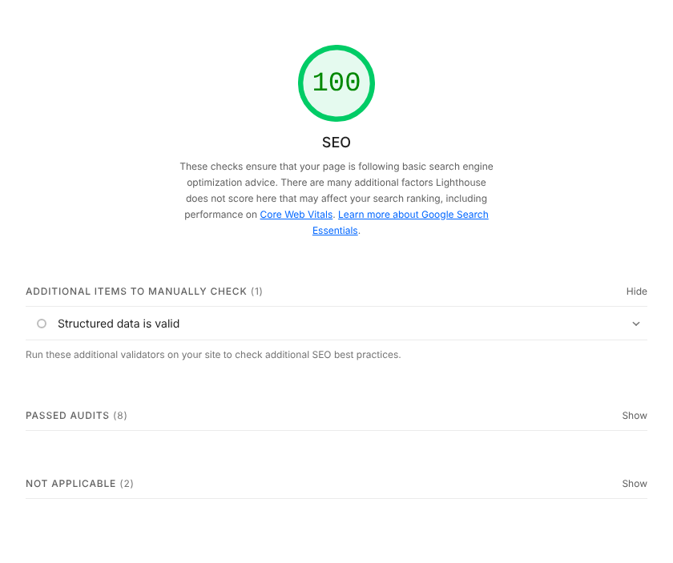

Mobile Version
I used option 3 from the assignment: one home page that works on both phone and desktop. Under 768 pixels wide, the menu collapses behind a Menu button and each section opens with a tap. On desktop it is a normal dropdown bar. Both have the same menu choices.
A tap on a touch screen fires the same click event as a mouse click, so one click handler in menu.js runs the menu for touch, mouse, and keyboard. Hover only opens dropdowns inside a (hover: hover) media query, so touch screens don't get stuck on it. Menu items are at least 48 pixels tall so they are easy to tap, and the home page image now resizes to fit the screen.


Overall Scores
- Performance: 100 (was 97 before the changes)
- Accessibility: 100 (was 100)
- Best Practices: 100 (was 96)
- SEO: 100 (was 100)
Test setup: Lighthouse 13.6.0, navigation mode, mobile, run against these site files on a local test server before upload. Scores change a little from run to run. Open the full Lighthouse report.
Google shut down its separate Mobile Friendly Test in 2023, so Lighthouse is the tool used for this audit.
Performance
First Contentful Paint 0.8 s, Largest Contentful Paint 1.4 s, Total Blocking Time 0 ms, Cumulative Layout Shift 0, Speed Index 0.8 s. The score is 100, but Lighthouse still lists these issues:
- Improve image delivery (about 61 KiB). The phone gets the 960 pixel image for a space about 380 pixels wide. A middle size image in the srcset would fix this.
- Render blocking requests (about 130 ms). The browser waits on style.css before drawing the page. Inlining the critical CSS would help, but the file is under 2 KiB so it isn't worth much.
- Efficient cache lifetimes (about 68 KiB). Files were cached for 10 minutes, the same as GitHub Pages. GitHub sets that, not me, so I can't change it on this host.
- Network dependency tree. This lists index.html loading style.css. The chain is only two files and took 56 ms, so there is nothing to fix.

Accessibility
No failed audits. Lighthouse also lists 10 items to check by hand because it can't test them automatically. A score of 100 doesn't prove a page is fully accessible. The old menu also scored 100, even though its sections were plain text that a keyboard couldn't open and the photo was broken. The new menu uses real buttons with aria-expanded, which fixes the keyboard problem.

Best Practices
The first run scored 96 because the site had no favicon, which logged a 404 error in the console. I added an icon to the page and the score went to 100. No issues are left in this section.

SEO
No failed audits. The page has a title, a meta description, a viewport tag, and descriptive links. Lighthouse lists 1 extra item to check by hand.
